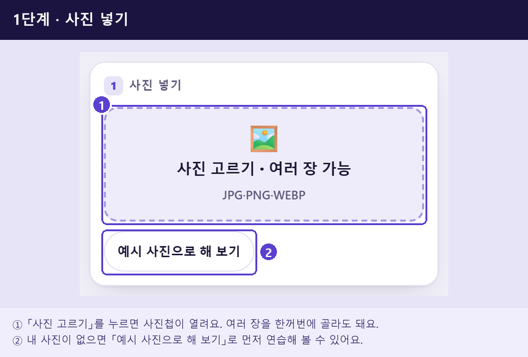
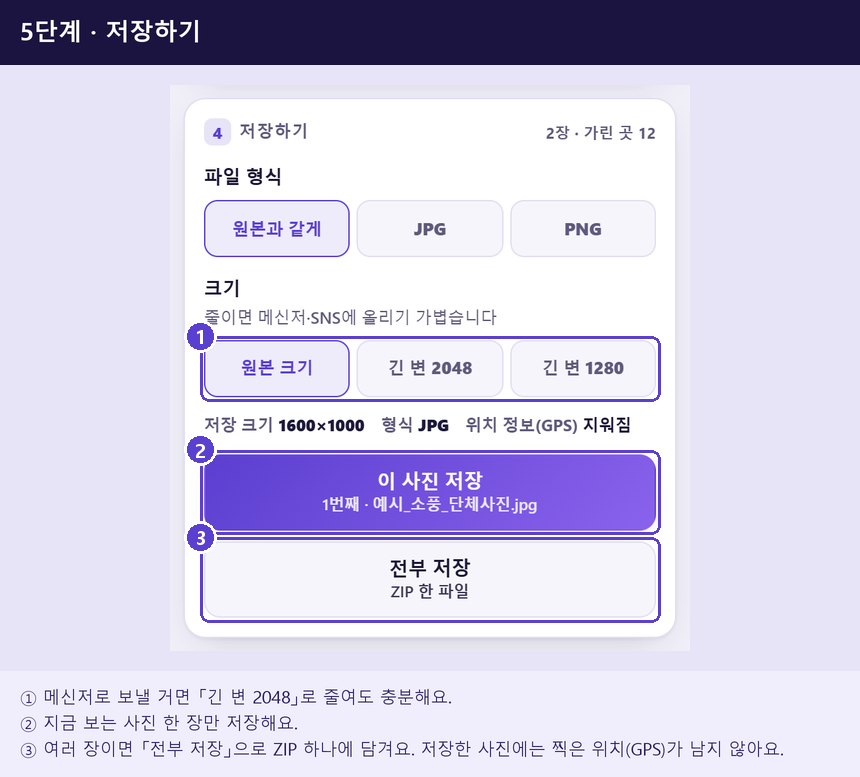

스마트에디터 ONE에는 HTML 입력이 없어서, 이 화면에서 복사 → 붙여넣기로 옮깁니다. 아래 순서대로 하면 10분이면 끝납니다.
photo_mosaic_naver 폴더를 GitHub 저장소 hwj-hub/photo_mosaic에 올려 두었다면 [사진까지 본문 복사] 하고 본문 첫 줄에 Ctrl+V. 글·굵게·강조 상자와 함께 사진 11장이 제자리에 들어갑니다.photo_mosaic_01_cover.png)의 대표 버튼을 누르고, 태그 칸에 태그를 붙여넣습니다.GitHub에 올린 사진 주소를 확인하는 중…
og-image.png를 연결해 두었지만, 배포한 뒤에 주소를 붙여야 그림 있는 카드가 만들어집니다.아이 유치원 가을 소풍 날, 선생님이 반 단톡방에 단체 사진을 잔뜩 올려 주셨어요. 그중 몇 장을 제 블로그 육아 일기에 쓰고 싶었는데, 우리 아이 말고 다른 친구들 얼굴이 다 나와 있더라고요.
남의 집 아이 얼굴을 그대로 올릴 수는 없어서 모자이크 어플을 깔아 보려다가, 광고 보고 회원가입하고… 사진 열 장을 하나씩 문지를 생각을 하니 엄두가 안 났어요. 그래서 폰 브라우저에서 주소만 열면 얼굴을 알아서 찾아 가려 주는 곳을 찾아 썼고, 해 본 순서를 그대로 적어 둘게요.
|
이 글에서 알 수 있는 것 ✅ 어플 설치 없이 폰에서 사진 모자이크 하는 순서 ✅ 단체 사진 얼굴을 한 번에 가리는 법(자동으로 찾아 줘요) ✅ 모자이크·블러·칠하기·얼굴 스티커 고르는 법 ✅ 카톡 캡처 속 이름·전화번호 확실하게 지우는 법 |
|
🔎 올리기 전에 꼭 기억할 것 · 자동으로 찾아 줘도 빠지는 얼굴이 있을 수 있어요. 저장한 사진을 열어 한 번 더 훑어보고 올려요. · 번호·주소 같은 글자는 모자이크보다 까맣게 칠하는 쪽이 안전해요(아래 사진 8에서 비교해요). · 얼굴을 가려도 이름표나 옷으로 누군지 알 수 있어요. 다른 사람이 나온 사진은 허락을 먼저 구하는 게 좋아요. · 누구나 쓰도록 무료로 열어 둔 페이지라, 가리지 못한 부분 때문에 생긴 일은 만든 사람이 책임지지 않아요. |
어플 대신 쓴 곳
제가 쓴 건 사진 모자이크라는 무료 페이지예요. 사진이 어디로 올라가지 않고 내 폰 안에서만 처리된다고 해서 안심하고 썼어요. 아이폰 사파리, 갤럭시 크롬 둘 다 그냥 주소만 열면 돼요.
네이버 앱에서 링크를 누르면 「크롬에서 열기」 창이 먼저 떠요. 앱 안 화면은 사진 저장이 막혀 있어서 그렇대요(맨 아래 사진 11).
1단계 · 사진 넣기
맨 위 ① 「사진 고르기」를 누르면 사진첩이 열려요. 소풍 사진을 여러 장 한꺼번에 골랐는데 한 번에 60장까지 된대요. 연습해 보고 싶으면 ② 「예시 사진으로 해 보기」를 누르면 그림으로 된 단체 사진이 들어와요.

2단계 · 얼굴은 알아서 가려져요
사진을 고르자마자 얼굴마다 점선 동그라미가 생기면서 모자이크가 돼 있었어요. 직접 문지를 필요가 없어서 제일 편했던 부분이에요.
① 위에는 넣은 사진이 줄지어 있고 사진마다 몇 곳 가렸는지 적혀요. ② 점선 동그라미가 자동으로 찾은 얼굴이고, ③ 아래 줄에 가린 곳이 몇 개인지 나와요.
3단계 · 빠진 얼굴 더하고, 우리 아이는 빼기
저는 우리 아이 얼굴은 보이게 두고 싶어서 그 동그라미를 눌렀어요. ① 빨간 × 단추가 생기는데 그걸 누르면 그 자리만 원래대로 보여요. ② 아래 줄 「지우기」를 눌러도 똑같고요. 실수로 지웠으면 ③ 「되돌리기」로 살리면 돼요.
반대로 뒷줄에 작게 나온 친구는 못 찾았는데, 그런 얼굴은 손가락으로 쭉 끌어서 네모를 그리면 바로 가려져요. 두 손가락으로 벌리면 사진이 커져서 작은 얼굴도 정확히 그릴 수 있어요.
|
💡 단체 사진 뒷줄 얼굴이 작다면 「가리는 방법」 칸 맨 아래 접힌 설정(자동 얼굴 찾기)을 열면 체크 칸이 두 개 있어요. 그중 작은 얼굴 쪽에 체크하고 「이 사진 다시 찾기」를 눌러 봐요. 조금 오래 걸리는 대신 더 작은 얼굴까지 잡아 줘요. 고개를 돌린 옆얼굴도 기본으로 찾아 주는데, 마스크나 선글라스로 많이 가린 얼굴은 놓칠 때가 있어요. |
4단계 · 모자이크 말고 블러나 스티커로
① 칸에서 모자이크·흐리게(블러)·칠하기·스티커 중에 고르면 모든 동그라미가 한꺼번에 바뀌어요. ② 숫자는 세기인데, 모자이크는 클수록 칸이 굵어지고 흐리게는 더 뿌옇게 번져요.
아이들 사진이라 저는 스티커로 했어요. 웃는 얼굴 같은 그림 문자 12가지 중에 고르면 얼굴 위에 큼직하게 얹혀요. 스티커 밖으로 삐져나온 부분은 밑에서 한 번 더 흐려 줘서 티가 안 나요.
한 사람만 다르게 하고 싶으면 그 동그라미를 먼저 눌러 두고 고르면 돼요. 「선택한 영역만 바꿉니다」라는 글씨가 뜨면서 그 얼굴만 바뀌어요.
중고거래 캡처의 이름·번호도 지웠어요
소풍 사진 말고도 같은 날 중고거래 택배 대화를 후기로 남기려던 참이었어요. 캡처에는 얼굴이 없으니 자동으로 잡히는 건 없고, 가릴 줄 위를 손가락으로 끌어 네모를 그린 다음 「칠하기」를 골랐어요.
대화방 위 이름, 말풍선 위 이름, 받는 분·연락처·주소·송장 번호, 입금 계좌까지 전부 까맣게 덮었더니 깔끔해졌어요. 바탕이 흰 말풍선이면 칠할 색을 「주변」으로 바꿔 보세요. 까만 막대 대신 바탕색으로 지워져서 원래 글이 없던 것처럼 보여요.
글자는 꼭 칠하기로 하세요
혹시나 해서 같은 연락처·주소 줄을 모자이크(세기 1), 흐리게(세기 2), 칠하기로 하나씩 해 봤어요. 앞의 두 개도 숫자는 안 읽히는데, 자세히 보면 글자 줄 모양이 희미하게 남아 있어요.
찾아보니 모자이크된 글씨를 원래대로 알아내는 프로그램이 실제로 있대요. 칠하기는 원래 글자가 하나도 안 남으니 그럴 걱정이 없고요. 그래서 번호·주소·계좌는 칠하기, 얼굴은 모자이크나 스티커로 나눠 쓰는 게 제일 마음 편했어요.
5단계 · 저장하기
① 크기는 단톡방이나 블로그에 올릴 거라 「긴 변 2048」 단추로 줄였어요. 용량이 확 줄어서 올리기 가벼워요. ② 「이 사진 저장」은 지금 보는 한 장만, ③ 「전부 저장」은 넣은 사진을 ZIP 파일 하나로 받아요.
폰에서는 「사진첩에 저장」 단추도 따로 나와요. 누르면 공유 창이 뜨고, 목록에서 「이미지 저장」을 누르면 사진첩으로 쏙 들어가요. 그리고 저장한 사진에는 찍은 장소(GPS) 정보가 안 남는대요. 집 근처에서 찍은 사진도 위치가 새지 않아서 좋았어요.

아이폰·갤럭시·PC 다 되나요?
· 아이폰은 사파리로 열면 돼요. 아이폰 사진은 원래 HEIC라는 형식인데, 사파리에서 고르면 JPG로 바뀌어 들어와서 따로 바꿀 필요가 없었어요.
· 갤럭시는 크롬이나 삼성 인터넷으로 열면 돼요. 두 손가락 확대, 끌어서 그리기 모두 똑같이 돼요.
· PC는 화면이 넓어서 사진이 많을 때 더 편해요. 편집 화면 옆에 설정이 나란히 보이고, 사진 파일을 끌어다 놓아도 들어가요.
네이버 앱에서 눌렀다면
이 글의 링크를 네이버 앱 안에서 누르면 사진 저장이 막혀 있어서, 시작하기 전에 아래 같은 창이 먼저 떠요. 「크롬에서 열기」를 누르면 같은 화면이 크롬으로 넘어가요. 아이폰은 「주소 복사」를 누르고 사파리 주소창에 붙여 넣으면 돼요.
소풍 사진 열 장 정도를 10분 안에 다 가려서 블로그에 올렸어요. 어플 깔기 부담스러웠던 분들, 단체 사진 올리기 전에 한 번 써 보세요. 올리기 전에 저장한 사진을 한 번 더 확인하는 것만 잊지 마시고요.